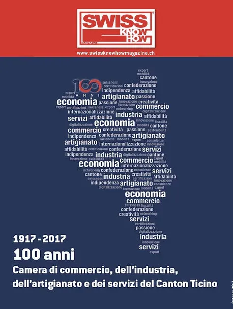

En bref
Luca Albertoni, directeur de la Cc-Ti, explique la stratégie de la chambre : élargir son réseau de contacts nationaux et internationaux et rendre le Tessin plus présent au nord du Gothard, surtout à Berne, en participant activement à la politique économique nationale. Un délégué, l'avocat Michele Rossi, gère les relations extérieures vers Berne et Milan, ce qui a aidé à faire entendre des dossiers comme les listes noires italiennes. La chambre a signé des accords avec les chambres russes établies à Zurich et avec la chambre italo-belge de Bruxelles pour favoriser l'internationalisation. Albertoni veut faire du Tessin le trait d'union entre Romandie et Suisse alémanique et souligne que ses indicateurs économiques ne font plus de lui le parent pauvre de la Confédération. Texte en italien et en anglais.
« Gli imprenditori parlano la stessa lingua indipendentemente dal luogo in cui operano. »— Luca Albertoni
L'interview intégrale
La Camera di commercio, dell’industria, dell’artigianato e dei servizi del Cantone Ticino (Cc-Ti), quale associazione-mantello dell’economia ticinese, è un interlocutore privilegiato delle autorità federali e cantonali e favorisce l’attività delle imprese attraverso una serie di iniziative concrete in vari ambiti. I rappresentanti della Cc-Ti partecipano inoltre attivamente a tutti i consessi economici e politici più importanti a livello cantonale, nazionale e internazionale.
Vi è un contatto diretto con le maggiori associazioni economiche svizzere come economiesuisse, Unione svizzera delle arti e mestieri – Usam e Osec e un lavoro costante con le altre Camere di commercio e dell’industria svizzere. “La strategia, attuata dalla Camera negli ultimi anni e che sarà rafforzata nei prossimi anni, è quella di ampliare la già importante rete di contatti nazionali e internazionali”, spiega Luca Albertoni, Direttore della Camera di commercio del Cantone Ticino. “Per rafforzare il tessuto economico del nostro Cantone, e facilitare la possibilità di contatto dei nostri associati, è importantissimo che il Ticino sia il più possibile presente oltre San Gottardo e in particolare a Berna. Questo non vuol dire avallare una visione di un Ticino rivendicativo, ma essere protagonisti attivi della politica economica nazionale”, continua Albertoni. Il fatto di avere un proprio delegato nella persona dell’Avvocato Michele Rossi che cura i rapporti esterni dell’economia ticinese verso Nord (Berna) e verso Sud (Milano), è indicativo della volontà di aprirsi e di creare canali importanti per valorizzare il territorio cantonale quale luogo privilegiato per attrarre investimenti. “Questo ha di fatto aiutato la capacità di persuasione nei confronti della capitale politica che ora s’interessa maggiormente alle problematiche che solleviamo. Un esempio è dato dalla questione delle black-list italiane che colpiscono non solo le imprese ticinesi, ma anche quelle di oltre San Gottardo divenute nel frattempo oggetto della trattativa italo-svizzera per dirimere l’annosa vertenza fiscale che divide i due Paesi”, spiega il Direttore della Camera di commercio del Cantone Ticino che fa notare come spesso il mondo economico è in grado di superare divergenze “in modo più immediato e pragmatico rispetto alla politica”. “Gli imprenditori ‘parlano’ la stessa lingua indipendentemente dal luogo in cui operano e dall’ambiente istituzionale in cui si trovano. E la storia dimostra che l’economia ha creato più ponti tra le diverse popolazioni che divisioni”, afferma. Lo stesso approccio – pragmatico – è utilizzato anche per quanto riguarda il processo d’internazionalizzazione delle aziende ticinesi che cercano nuovi mercati o di quelle che desiderano insediarsi a Sud delle Alpi. In questo senso Luca Albertoni porta l’accordo di collaborazione siglato dalla Camera di commercio del Cantone Ticino con le sue omologhe russe che hanno sede in Svizzera (a Zurigo). Accordo che rientra nel più ampio accordo svizzero-russo per sostenere il processo d’internazionalizzazione dalla Svizzera verso la Russia e viceversa. Per rimanere nell’Unione Europea (primo partner commerciale della Svizzera), invece, Albertoni porta l’esempio dell’accordo firmato con la Camera di commercio italo-belga con sede a Bruxelles. “Sono dei segnali che vanno nella direzione di maggiore apertura e quindi di opportunità di business per i nostri associati”. “Noi – precisa Albertoni – ci proponiamo come l’ago della bilancia tra la Romandia e la Svizzera tedesca portando la nostra identità e cultura che non è soltanto latina, ma svizzera di lingua italiana. L’economia, le istituzioni e la cultura che portiamo è profondamente elvetica. Lo dimostrano anche i dati economici (export, produzione, disoccupazione, eccetera) che da ormai un decennio non fanno più apparire il Ticino come il parente povero della Confederazione. La dinamica economica è ora molto più simile a quella delle altre regioni svizzere, fatte comunque le debite proporzioni. Restiamo pur sempre una minoranza e che come tutte le minoranze a volte dobbiamo gridare più forte per farci sentire”, conclude il Direttore della Camera di commercio.
Entretien rédigé sous forme d'article (propos rapportés), sans questions-réponses.
Texte paru dans Swiss Knowhow – Camera di commercio del Cantone Ticino (Cc-Ti) (2012), p. 4.

Personnes citées
- Luca AlbertoniDirettore della Camera di commercio del Cantone Ticino
- Michele RossiDelegato per le relazioni esterne

Paru dans
Swiss Knowhow – Camera di commercio del Cantone Ticino (Cc-Ti) (2012)
2012 · page 04-05 · article original en italien
Lire l'article complet PDF